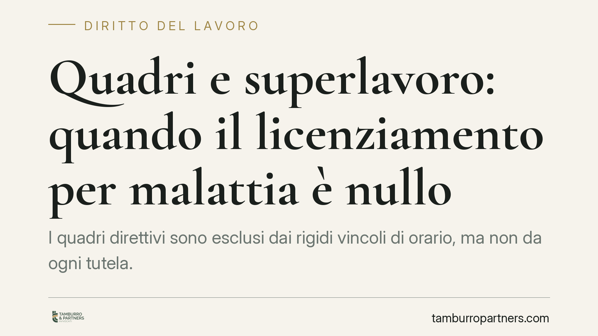

Quadri e superlavoro: quando il licenziamento per malattia è nullo
I quadri direttivi sono esclusi dai rigidi vincoli di orario, ma non da ogni tutela. La Cassazione ribadisce un principio netto: se la malattia che porta al superamento del comporto deriva da un sovraccarico di lavoro imputabile al datore, il licenziamento è nullo. Al lavoratore spettano reintegro, differenze retributive e risarcimento del danno.

Il fatto
Un quadro direttivo viene licenziato per superamento del periodo di comporto, cioè del termine massimo di conservazione del posto durante la malattia. La difesa aziendale punta su un dato apparentemente solido: i quadri, come i dirigenti, sono sottratti alla disciplina ordinaria sull'orario di lavoro. Da qui l'idea che il carico di attività non possa essere messo in discussione.
La Cassazione, Sezione Lavoro, ribalta questa impostazione. L'esclusione dai vincoli orari non autorizza il datore a scaricare sul quadro un volume di lavoro che ne mina la salute. Quando la patologia è causalmente collegata a quel sovraccarico, il licenziamento che ne consegue è nullo.
Inquadramento normativo
Il punto di snodo è l'art. 2087 c.c., che impone all'imprenditore di adottare tutte le misure necessarie a tutelare l'integrità fisica e la personalità morale dei lavoratori. È una norma di chiusura: opera anche dove manchi una disciplina di dettaglio sull'orario, come accade per i quadri direttivi.
La deroga ai limiti di orario non significa assenza di limiti alla prestazione. Significa solo che non si applicano i tetti rigidi previsti per la generalità dei lavoratori. Il dovere di sicurezza resta pieno. Se il datore organizza il lavoro in modo da esporre il quadro a uno stress prolungato e prevedibile, risponde delle conseguenze sulla salute.
Ne discende la logica della nullità: il comporto che matura a causa di una malattia provocata dall'inadempimento datoriale non può legittimare il recesso. Il datore non può invocare, a proprio vantaggio, una situazione che lui stesso ha determinato violando l'art. 2087 c.c. È il principio per cui nessuno può trarre beneficio dal proprio illecito.
Implicazioni pratiche
Per il quadro direttivo cambia la prospettiva difensiva. Non basta che l'azienda dimostri il mero superamento dei giorni di comporto: diventa rilevante la causa della malattia. Se il lavoratore prova il nesso tra sovraccarico e patologia, il licenziamento cade.
Le conseguenze sono significative:
- reintegrazione nel posto di lavoro, trattandosi di licenziamento nullo e non semplicemente illegittimo;
- differenze retributive, laddove il carico eccedente non sia stato adeguatamente compensato;
- risarcimento del danno, comprensivo del danno biologico e di eventuali profili non patrimoniali connessi alla lesione della salute.
Per il datore di lavoro il messaggio è altrettanto chiaro. L'inquadramento come quadro non è uno scudo organizzativo. Un modello aziendale che normalizza turni abnormi, reperibilità continua e obiettivi insostenibili espone l'impresa a un rischio concreto, sia sul piano della nullità del recesso sia su quello risarcitorio.
Resta centrale il tema della prova. Il nesso tra lavoro e malattia va documentato: certificazioni mediche, consulenze tecniche, elementi che fotografino l'effettivo volume di attività. Non è sufficiente l'affermazione di un generico stress.
Cosa fare in concreto
- Documentate il carico di lavoro reale: conservate email, cronologie di accesso ai sistemi, pianificazioni, comunicazioni su obiettivi e scadenze. Sono elementi che ricostruiscono l'effettiva intensità della prestazione.
- Raccogliete per tempo la documentazione sanitaria: diagnosi, referti e, se possibile, indicazioni mediche sul collegamento tra la patologia e le condizioni di lavoro.
- Verificate il calcolo del comporto: controllate che i giorni conteggiati siano corretti e che il datore abbia rispettato eventuali obblighi di comunicazione sull'approssimarsi della soglia.
- Non attendete il licenziamento per reagire: segnalate per iscritto situazioni di sovraccarico prolungato. Una contestazione tempestiva rafforza la ricostruzione del nesso causale.
- Consigliamo una valutazione legale mirata prima di impugnare o, sul fronte aziendale, prima di procedere al recesso: la verifica del nesso tra organizzazione del lavoro e malattia è decisiva per l'esito.
Un equilibrio ragionevole
La pronuncia non trasforma ogni malattia del quadro in responsabilità aziendale. Richiede un collegamento effettivo e provato tra l'organizzazione imposta dal datore e la patologia. Ma segna un limite preciso: la flessibilità richiesta alle figure apicali non può spingersi fino a comprometterne la salute, e tanto meno può diventare il presupposto per allontanarle dall'azienda.
---
*Contributo informativo a cura di Tamburro & Partners - Avv. Giuseppe Tamburro. Non costituisce parere legale.*
Ogni storia di lavoro ha i suoi tempi.
Se gestisci HR e vuoi un confronto su contenzioso, ispezioni o licenziamenti, scrivi allo studio. Ti rispondiamo entro un giorno lavorativo.